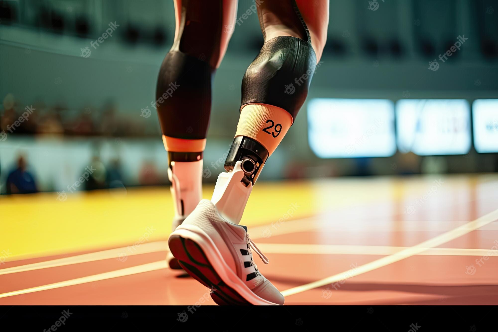
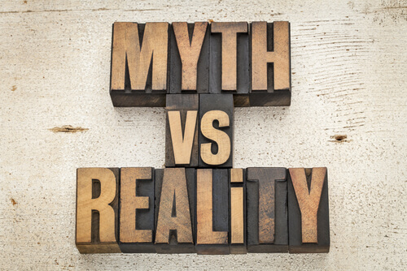

In the pursuit of personal growth and self-improvement, there is nothing quite as exhilarating as embarking on a journey to master a new skill. Whether it's playing an instrument,
coding, painting, or even extreme sports, the process of acquiring and honing a skill can be both challenging
and immensely rewarding. In this blog, we delve into the concept of embracing continuous learning by embarking
on a year-long adventure of learning experiments. Join us as we explore the joys, challenges, and
transformative power of immersing ourselves in various skills and uncover the valuable lessons we can learn
along the way.
Embarking on a journey of self-discovery and skill acquisition, we delve into the mindset of a lifelong learner. We discuss the importance of setting goals, maintaining curiosity, and embracing the process of continuous learning. By venturing out of our comfort zones, we lay the foundation for an exciting year of skill mastery.
The Musician Within
In this chapter, we take on the challenge of learning to play a musical instrument. We explore the benefits of music on our mental well-being, the different approaches to learning an instrument, and the joys and frustrations that come with mastering melodies. Through practice, perseverance, and guidance, we discover the musician within us.
Unlocking the World of Code
Venturing into the realm of coding, we unravel the mysteries of programming languages and dive into the fascinating world of web development, software engineering, or data analysis. We navigate through coding tutorials, online courses, and collaborative coding projects to unlock the power of problem-solving and innovation through code.

Painting Life's Canvas
In this chapter, we pick up the paintbrush and explore the realm of visual arts. We discover the power of colors, composition, and perspective as we experiment with different painting techniques and styles. Through practice, observation, and self-expression, we unlock our creativity and find solace in the world of art.
Pushing Physical Boundaries
Taking on the challenge of mastering a physically demanding skill, we delve into the realm of extreme sports or physical disciplines such as yoga or martial arts. We explore the connection between mind and body, pushing our limits, and uncovering the transformative power of physical activity and discipline.

Reflecting on the Journey
As our year of learning experiments draws to a close, we reflect on the invaluable lessons we have learned along the way. We explore the personal growth, resilience, and adaptability that come from embracing continuous learning. We share insights, challenges, and moments of triumph that have shaped our journey and inspired us to continue learning beyond the confines of a single year.
Embarking on a year-long adventure of learning experiments opens doors to personal growth, self-discovery, and a deeper understanding of our capabilities. By immersing ourselves in the process of acquiring new skills, we unlock our potential, push our boundaries, and cultivate a mindset of lifelong learning. Through the challenges, frustrations, and triumphs, we realize that the journey itself is just as important as the destination. So, let us embrace the joy of continuous learning and embark on a transformative journey of mastering new skills, one experiment at a time.
Written on 2023-02-13
Featured Post
10 Book Reading Habits to Cultivate for a Lifetime of Learning and Enjoyment

The Future of Technology: Exploring Cutting-Edge Innovations

Myth vs what should be doing
Exploring Career Paths: A Guide for High School Students